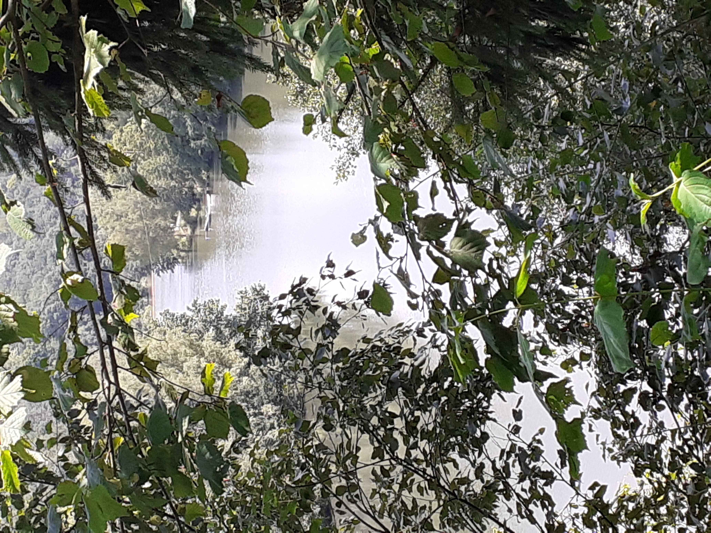
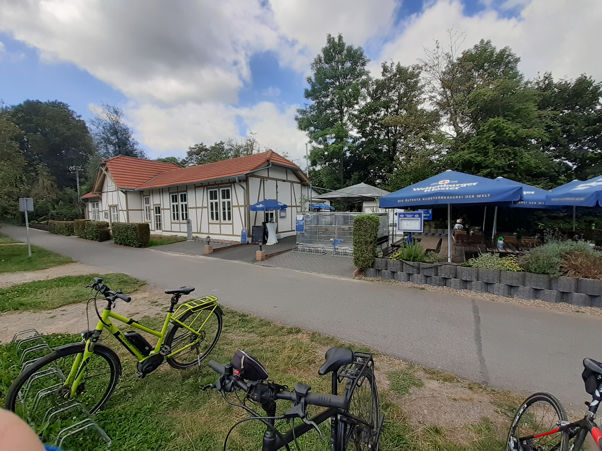

Dhünntalsperre
Blick von der Serpentine, die hoch zur B506 Richtung Wipperfürth führt. Man kann an den Baumgerippen die Spuren vergangener Dürren gut erkennen, die sich auch woanders mal häufiger zeigen.

Tour: Balkantrasse - Wippertalbahntrasse - Balkantrasse
Das Höhenprofil sieht in Summe recht einfach aus, auch wenn es in Summe dann doch insgsamt 900 Höhenmeter waren. Auf den Trassen sind die Steigungen smart, abseits davon kann es auch steiler werden. Signifikante Steigungen finden sich in dieser Tour runter zur Dhünntalsperre oder runter ins Tal von Dabringhausen aus nach Burscheid-Hilgen.
Hier einige Impressionen von dieser Tour.
Blick von der Serpentine, die hoch zur B506 Richtung Wipperfürth führt. Man kann an den Baumgerippen die Spuren vergangener Dürren gut erkennen, die sich auch woanders mal häufiger zeigen.
Am Gelände des ehemaligen Bahnhofs Wipperfürth wurde im März 2013 ein Schienenbus aufgestellt, der an das Durchgangslager für Flüchtlinge nach dem Zweiten Weltkrieg erinnert.

Hier schon mal den einen oder anderen Hückeswagener Triathlon gemacht, wenn auch schon länger her. :-)

Man fährt teilweise an der Wupper entlang oder kreuzt diese, wie hier in Hückeswagen.

Von der Trasse kurz hinter Hückeswagen kann man durch das Gestrüpp auf die Wuppervorsperre schauen.
Der Tunnel ist beleuchtet schafft bei hohen Temperaturen für ein wenig Abkühlung.

Die Wippertalbahntrasse ist nicht durchgängig befahrbar. Man muss einmal die Trasse kurz verlassen und wieder auffahren. Mit etwas Kraft lässt sich aber auch diese Steigung bewältigen.


Der Bahnhof auf der Balkantrasse lädt zur Pause ein.
